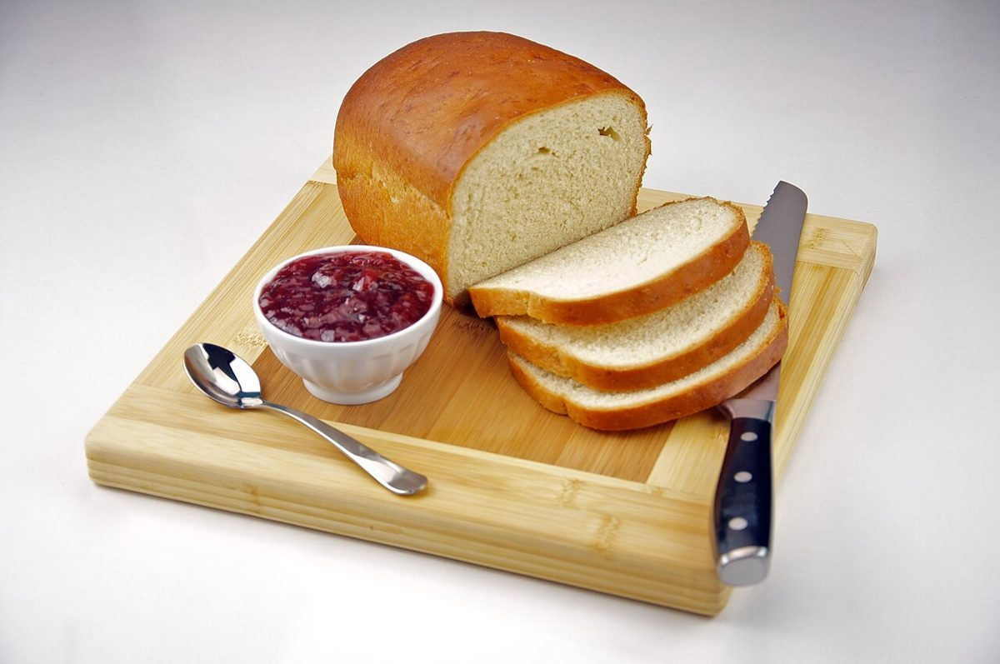

ベーカリー / 北海道釧路市
Jimico
北海道釧路市芦野にあるベーカリー「Jimico」のご案内ページです。営業時間やメニューなど、詳しいことは準備中。まずはInstagramをのぞいてみてください。

制作側の連想
ビンゴカードの穴をあけるように
屋号の由来や読みは分かりません。制作側は、アルファベットのまっすぐな字面から、数字をひとつずつ見つけて穴をあけていくビンゴカードを連想しました。このページは、写真を3×3のカードに並べて、真ん中の「FREE」に頭文字のJを置いています。制作側の連想で、お店の理念・由来とは無関係です。
パンのイメージ・カード
3×3の写真カード
写真はお店のものではありません。パンの雰囲気をイメージした、国外・撮影地不明のフリー素材です。

撮影地不明のイメージ 
撮影地不明のイメージ 
国外のイメージ(米国) 
撮影地不明のイメージ - JFREE

撮影地不明のイメージ 
撮影地不明のイメージ 
撮影地不明のイメージ 
国外のイメージ(スペイン)